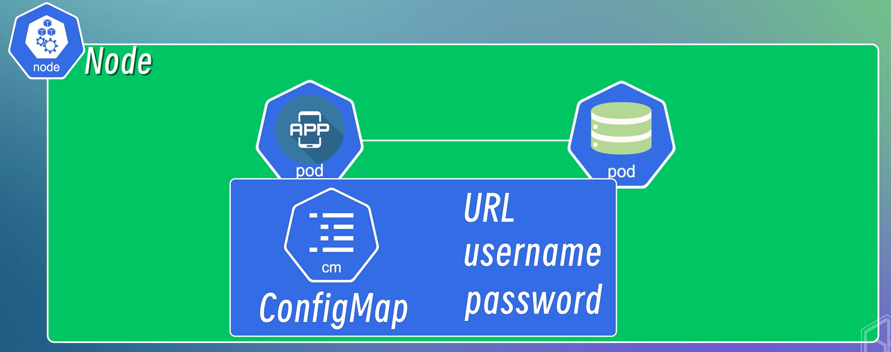
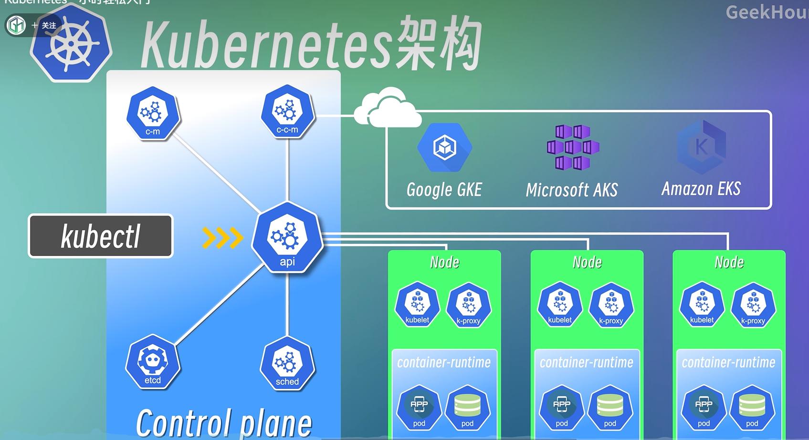

k8s学习笔记
k8s学习笔记
简介
解决容器很多时对容器进行管理
容器编排引擎
容器编排：通过配置文件定义应用程序的部署方式
特性
高可用性：容器长时间内持续正常运行，不会因为一个组件或服务故障导致整个系统不可用
自动重启、自动重建、自我修复
可扩展性：系统根据负载变化动态扩展和缩减资源，提高系统性能和资源利用率
…
组件
基础概念（资源对象）
Node：节点，一个物理机或者虚拟机，k8s集群操作的单元
Pod：
运行在节点上，一个或者多个应用容器的组合（一般情况下建议一个pod运行 一个容器）
k8s的最小调度单元
创建容器的运行环境，在环境中容器可以共享一些资源（网络、存储、运行时的配置等）
pod之间通过ip地址来通信
Service:
解决pod故障后被k8s自动销毁有重建一个ip名不同的pod场景下的问题
使用Service的ip地址来通信定义了pod的逻辑集合和访问该集合的策略，是真实服务的抽象
提供了一个统一的服务访问入口以及服务代理和发现机制
分类：
内部服务：不暴露给外都的服务，在集群内部被访问比如数据库、缓存和消息队列等
外部服务：暴露给外部的，例如后端api接口，前端页面
测试和开发环境中：
node:port 在节点开放一个端口，映射到Service的ip地址和端口
Ingress：
管理从集群外部到内部访问集群的方式
生产环境中从端口号访问服务时用配置：
配置不同的转发规则来访问不同的Service
配置域名来访问Service
负载均衡
SSL证书
相关组件
ConfigMap

封装配置信息，在应用程序中读取使用
配置信息和应用程序解耦，保持容器化应用程序可移植性
明文，不介意放敏感信息
secret组件：类似ConfigMap，但是可以封装敏感信息（做了一层Base64编码），需要搭配其他安全机制（网络安全、访问控制、身份认证等等）使用来保证数据安全
Volumes：
解决容器中数据无法持久化问题
将需要持久化的资源挂载到集群中的本地磁盘上或者集群外部的远程存储上
Deployment：
防止应用程序的单点故障问题，保证高可用性
在pod上增加一层抽象，将一个或多个pod组合在一起定义和管理应用程序的副本数量，以及应用程序的更新策略
简化应用程序的部署和更新操作
副本控制、滚动更新、自动扩缩容
StatefulSet：
防止*有状态的应用程序（eg. 数据库、缓存、消息队列）的单点故障问题* ，保证高可用性
数据库每个副本都有自己的状态（数据），需要持久化存储和保持一致性
保持会话状态
类似Deployment，但是保证每个副本都有自己稳定的网络标识符和持久化存储
缺点 ：部署繁琐，不是适用于所有的有状态的应用程序
==更方便、通用的方式：==把有状态的应用程序放在集群外单独部署
k8s架构
Master-Worker架构

Master-Node：负责管理整个集群，有4个基本组件
kube-apiserver：
提供集群的api接口服务，所有组件通过该接口通信，类似集群的网关，所有集群经过它，由它分发到不同组件进行处理
对所有资源对象的增删改查操作进行认证、授权和访问控制
etcd：
高可用的键-值存储系统，存储集群中所有资源对象的状态信息，数据存储中心
一般只存储集群中各种资源对象的状态信息，不存储应用程序的信息（例如数据库的信息）
controller-manager：
管理集群中各种资源对象的状态，例如pod故障需要替换等
云服务商提供的k8s集群额外提供：Cloud Controller Manager
与云平台的api进行交互，并提供一致的管理接口
schecduler：
监控集群中所有节点的资源使用情况
根据调度策略，将pod调度到合适的节点上运行
Worker-Node：负责运行应用程序和服务，每个节点包含三个组件
kubelet：管理和维护节点上的Pod，确保按照预期运行，定期从api-server接收新的或修改后的Pod规范，监控工作节点的运行情况并向api-server汇报
api-server：封装核⼼对象的增删改查操作，以RESTful API接⼝⽅式提供给外部客户和内部组件调⽤
kube-proxy：为pod对象提供网络代理和负载均衡服务
用于节点之间通信（通过Service），在每个节点上启动一个网络代理
作为负载均衡器，接收不同的请求，并发送到不同节点
container-runtime：运行容器的软件，包括拉取容器镜像，创建容器、启动/停止容器，所有应用程序都需要该组件运行
常见的有Docker-Engine、Contained、CRI-O、Mirantis Container Runtime